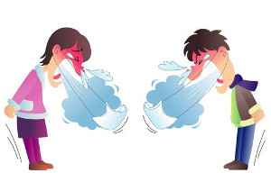

Лайфхаки від мікробіолога - як не захворіти
Так звана застуда може "прийти" в двох випадках – "зовні" і "зсередини";
Зараза "зовні":
Джерелом зарази "зовні" є будь-який чхаючий, кашляючий і дихаючий хворий індивід а також поверхні, які він контамінує. При чому, якраз роль цих поверхонь часто є ключовою, бо частіше ми захворіваєм не тоді, коли на нас хтось кашлянув, а тоді, коли той, хто кашлянувши собі в жменю, торкнувся до поручня, а потім взялися за поручень ми, а потім потерли собі носа. Такі ланцюжки можуть бути дуже хитромудрими, але найчастіше вони включають в себе такі ланки як руки, поручні, дверні ручки, наші мобільні телефони, гаманці, кнопки ліфтів та домофонів, клавіатуру, ... окуляри, бороди та дівчачі чуприни. Ну і, звичайно, потенційно небезпечним є будь-який закритий простір із "кашляючими" та "чхаючими" - громадський транспорт, робочий "опен-спейс", зонами особливо підвищеного ризику є аптеки та лікарні;
Зараза "зсередини" - наші власні мікроорганізми, які в нормі живуть-поживають на наших слизових оболонках горла та носа, але за певних обставин (переохолодження/стрес/недосип, тощо) можуть стрімко розмножуватися та порушувати перемир'я;
Відразу треба підкреслити, що зараза "зовні" є більш небезпечною за заразу "зсередини", бо мікроорганізми, що раніше "стали на хибний шлях", вже встигли селекціонувалися, здобувши букет факторів патогенності і часто – антибіотикорезистентності. Це як в лабораторних дослідженнях, коли штам якоїсь зарази, що вже почав втрачати свої патогенні властивості від нудного життя в пробірці, проганяють через групу морських свинок і він, почувши свіже м'ясо, знов, як спортсмен, у формі;
А тепер головне – які прийоми та звички дозволять нам не стати жертвами жодної з цих зарАз:
- по можливості уникаємо тих самих "чхаючих" та "кашляючих" - просто обійти, перенести зустріч, пересісти за інший столик, попросити колегу попрацювати/поспати вдома – іноді кілька хвилин ніяковості рятують весь тиждень від сопель;
- плануємо своє пересування містом не в час пік;
- найбезпечніший час для походу в аптеку чи супермаркет – ранок, хто стояв в довгій черзі температурних страждущих за "колдфлю" в якому-небуть віталюксі о сьомій вечора, той зрозуміє;
- беремо за правило старатися не торкатися зайвий раз обличчя та волосся, перебуваючи поза домом; до речі тим, в кого проблеми зі шкірою обличчя, це також стане у пригоді;
- до ритуалу повернення додому варто включити миття рук, обличчя, та також носа. Адже саме в порожнині носа назбирується все те, чим доводилося весь день дихати. Його щоденна гігієна покликана позбавити нас від всього того зоопарку, що може ще не встиг здійснити інтервенцію в наш безцінний організм та зіпсувати плани на вихідні; Приділяємо увагу бороді, чуприні та окулярам, якщо ви таке носите;
- до ритуалу повернення додому додаємо очищення мобільного телефону. Зайвий раз нагадаю, що даний предмет нами використовується скрізь - в транпорті, на кухні, в ліжку, туалеті. Є маса публікацій на цю тему, зокрема – телефони медперсоналу як розсадник внутрішньолікарняної інфекції, а також джерело зарази, що спричинюють вугрі на обличчі, тощо. Зараз на амазоні вже є готові рішення, типу домашнього стерилізатора для мобільного телефону. Я не є прихильником погоні за стерильністю та використанням дезінфектантів, але саме в цьому єдиному випадку схиляюсь до двох маленьких пшиків ізопропіловим спиртом
- а якщо у вас в суботу весілля, вручення оскара чи участь в олімпійських іграх, а тут бахнула епідемія грипу, але треба терміново подолати шлях з пункту А до пункт Б, то незле скористатися старими добрими лабораторними масками (лиш купуйте запаковані, чи слідкуйте, щоб добрий аптекар не подав її Вам тією ж п'ятірнею, якою щойно гроші брав у кашляючого покупця) чи убером замість метро;
Із заразою "зовні" розібралися, а що робити із своїми рідними бактеріями, щоб ті не стали "поперек горла"?
- примітивно, але дієво – повноцінний сон і уникнення зайвого стресу. Тому, якщо на вихідних ті ж самі весілля-оскар-ігри, то нічну гульку та сварку із сусідами ліпше перенести на наступний тиждень;
- примітивно, але логічно – уникнення переохолодження. Так, лиш найвитриваліші, хто доносить шапку і рукавиці до кінця весняних морозів, будуть щасливими володарями вільного від сопель носа і використаними квитками на Сухішвілі;
- ну а якщо вже трішечки починає "накривати", то те, що Вас здатне врятувати до завтрашнього ранку – повноцінний сон в шерстяних шкарпетках і шерстяному шарфику, часте полоскання горла теплою водою з содою (цей розчин просто спричинює виділення слизу, який буквально змиває біоплівку оскаженілих маленьких поганців із слизової);
- NB: на кілька днів варто виключити з раціону продукти, що містять у великій кількості цукор, адже це легкодоступний субстрат для бактерій на Вашій горлянці і цим ви їх лише підживите. Сюди відносяться як цукерки, тістечка, чай з цукром, так і всякі варення. Звучить дивно, але старе добре малинове варення для горла – ліки такі собі; також слід обмежити вживання продуктів, що схильні утворювати наліт – макаронні та мучні вироби, молочні продукти.
Здоров'я всім!

ps: і на останок - "захворів – сиди вдома" - дбай про ближнього, не чхай на нього і не псуй йому плани на вихідні :)